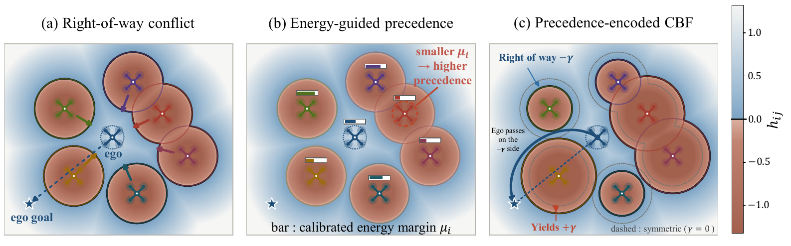
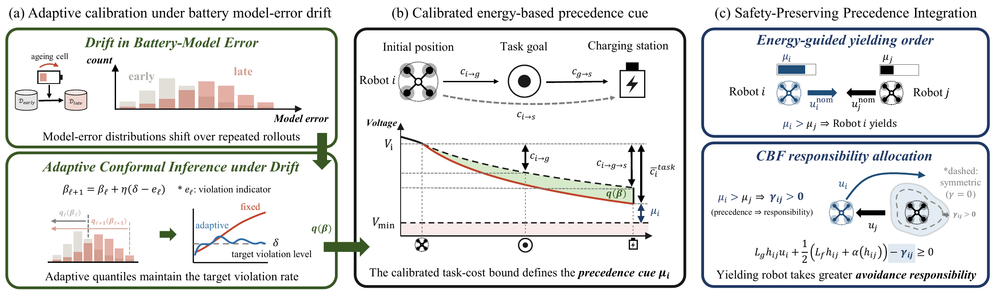
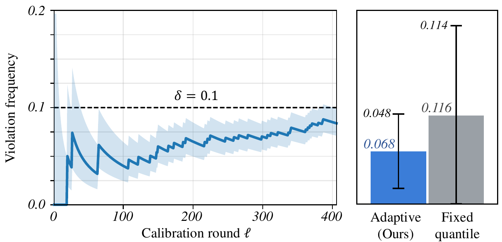
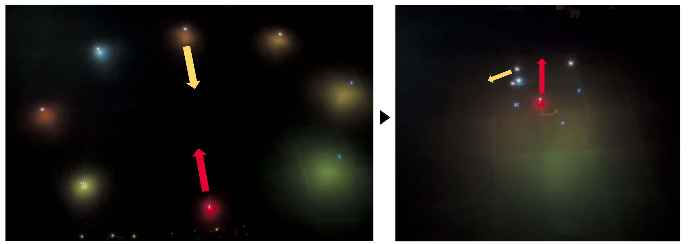

When robots cross paths in the field, someone has to yield. Instead of exchanging full planned trajectories, each robot broadcasts only how much energy it expects to have left after finishing its task and reaching a charger. The robot with the larger margin can afford the detour, so it yields.

Energy-guided right-of-way coordination. (a) Multiple robots compete for right of way in a congested encounter. (b) Calibrated precedence cues μi determine a unique yielding order, where a smaller μi indicates higher precedence and a larger μi indicates greater flexibility to yield. (c) The order is encoded through a responsibility-aware CBF term (γ), assigning greater avoidance responsibility to the yielding robot while preserving pairwise safety.
The energy expected to remain after task completion and travel to a charging station determines pairwise right-of-way. Exchanging only this scalar yields a unique ordering and reduces communication overhead for conflict resolution.
A battery-specific proxy model predicts the energy needed to reach a station directly and after the task. Adaptive conformal inference turns these predictions into bounds whose long-run violation rate is held at a prescribed level, giving conservative margins and a conditional station-reachability certificate.
Precedence is encoded in a responsibility-aware CBF by assigning unequal avoidance contributions within each interacting pair. The paired constraints preserve the underlying collision-avoidance condition regardless of who yields, and a common energy-based ordering prevents cyclic precedence.
The framework runs in two stages: an uncertainty-calibrated, energy-based precedence cue, followed by its safety-preserving integration into the local CBF quadratic program.

Overview of the proposed energy-guided precedence framework. (a) Adaptive conformal inference calibrates battery-model error under distribution shift, producing an adaptive quantile qℓ(βℓ) at the target violation level. (b) The calibrated task-cost bound defines the energy-based precedence cue μi = Vi − Vmin − c̄itask. (c) The resulting yielding order is encoded through CBF responsibility allocations, so the yielding robot assumes greater avoidance responsibility while pairwise safety is preserved.
To capture realistic discharge statistics under dynamic flight profiles, we collected about three hours of active flight data across 200 sorties from a Crazyflie 2.1 fleet, sourced from 14 individual single-cell LiPo batteries. A physically parameterized load-voltage proxy model is fit to this data and evaluated with a strict held-out split for each cell. Adaptive conformal inference drives the running violation frequency below the target level and robustly bounds the error across all cells under distribution shift, whereas a fixed-quantile baseline fails to adapt to cell-specific degradation.

Battery calibration performance. (Left) The running violation frequency converges below the target δ = 0.1. (Right) The adaptive method bounds errors across 14 cells, outperforming the fixed-quantile baseline.
Eight Crazyflie 2.1 quadrotors under an OptiTrack motion capture system execute a dense position-exchange task, with Crazyswarm broadcasting nominal trajectories. Agents exchange their local states and their calibrated energy margins. The local states enforce a responsibility-aware CBF with a 0.4 m safety margin, while the single scalar energy margin alone fixes the pairwise yielding precedence. The decentralized approach resolved every spatial conflict with zero collisions and induced strictly asymmetric yielding: agents with lower margins (red) kept their right-of-way for direct traversal, while agents with higher margins (yellow) actively absorbed the avoidance responsibility.

Hardware validation in an 8-agent congested intersection. (Left) Agents move to opposite positions, creating spatial conflicts. The red agent has a higher energy-guided priority than the yellow agent. (Right) Enforcing the calibrated precedence cue, the yellow agent actively yields, allowing the red agent to safely maintain its direct path.
As multi-agent systems transition from structured environments to unpredictable domains, communication constraints and energy autonomy become critical operational bottlenecks.
Heterogeneous usage introduces battery uncertainty across identical hardware, complicating reliable planning. Conventional right-of-way resolution also relies on bandwidth-intensive exchanges of planned trajectories or task intents.
We explicitly calibrate this usage-induced uncertainty to enable a highly scalable, low-bandwidth coordination strategy. We explore right-of-way coordination as a downstream task, where exchanging the energy sufficiency margin serves as a precedence cue during close encounters.
Future energy needs are estimated via a cell-specific proxy model, with prediction errors rigorously calibrated using adaptive conformal inference. These calibrated margins dictate a unique yielding order, embedded into a responsibility-aware control barrier function (CBF) to enforce asymmetric collision avoidance.
Validations show that this precedence cue maintains safety with slight energy efficiency gains during local encounters. The calibrated framework is ultimately more suited for comprehensive mission planning to achieve true long-term autonomy in the wild.
Confining the calibrated margin exclusively to a CBF formulation is inherently myopic for system-wide energy optimization. Future work will integrate this framework into higher-level mission planning architectures, such as global task allocation and long-horizon pathfinding, toward lifelong energy autonomy in disaster scenarios.